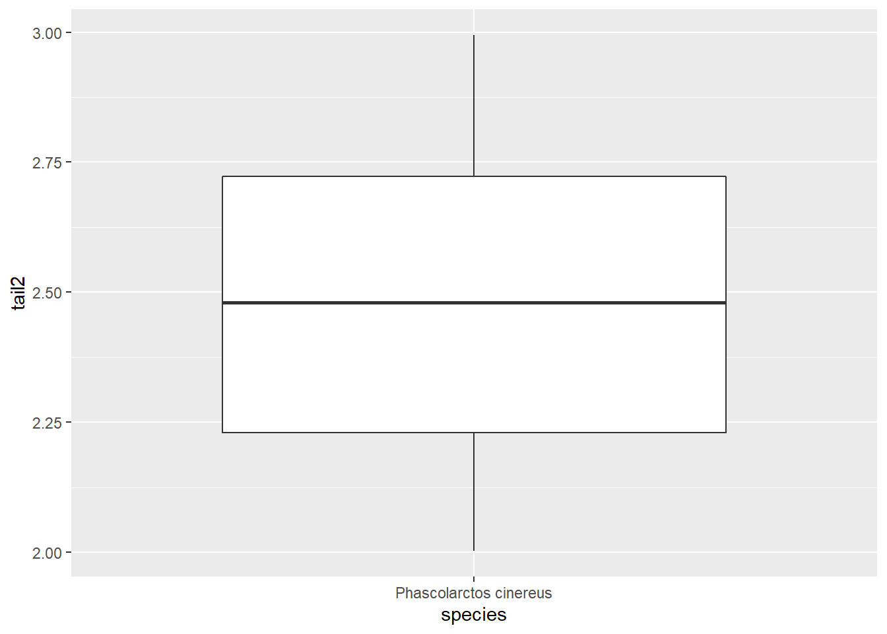
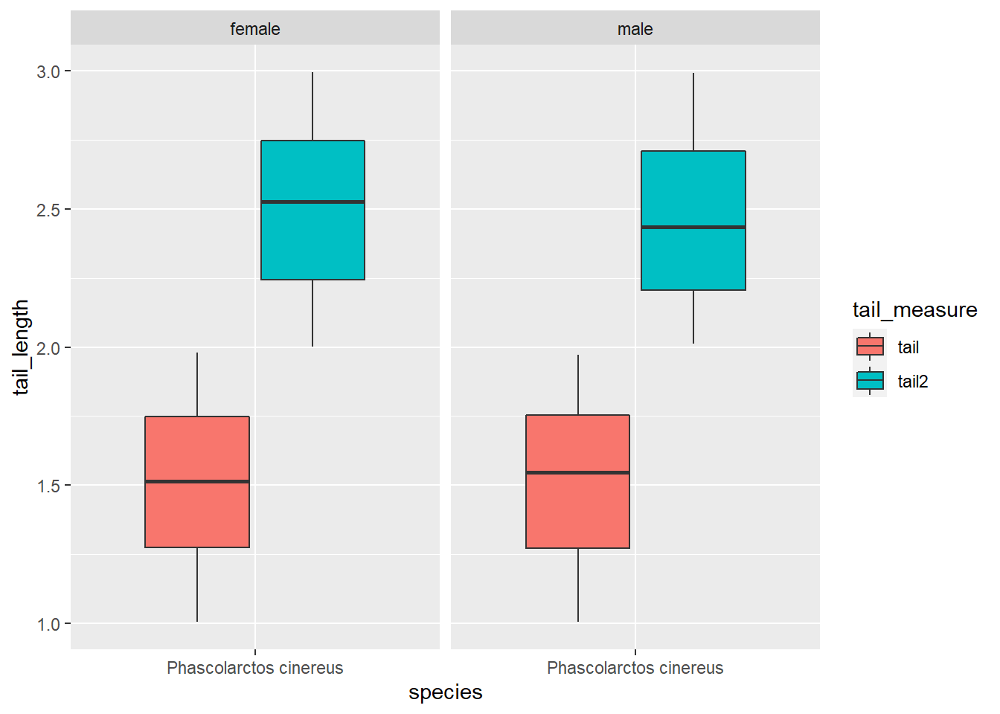

Chapter 4 dplyr - A brief introduction to tidy data manipulation

4.1 Loading and checking the data
We will work with our koala dataset. You can download it here. Furthermore you need to install the tidyverse package, which contains dplyr.
First we need to load the dataset we’re working with.
It should contain the following columns:
## [1] "species" "X" "Y" "state" "region" "sex" "weight"
## [8] "size" "fur" "tail" "age" "color" "joey" "behav"
## [15] "obs"Lets look at a structure and summary of this dataset:
## 'data.frame': 242 obs. of 15 variables:
## $ species: Factor w/ 1 level "Phascolarctos cinereus": 1 1 1 1 1 1 1 1 1 1 ...
## $ X : num 153 148 153 153 153 ...
## $ Y : num -27.5 -22.5 -27.5 -27.5 -27.5 ...
## $ state : Factor w/ 4 levels "New South Wales",..: 2 2 2 2 2 2 2 2 2 2 ...
## $ region : Factor w/ 2 levels "northern","southern": 1 1 1 1 1 1 1 1 1 1 ...
## $ sex : Factor w/ 2 levels "female","male": 2 1 2 2 1 2 2 2 1 1 ...
## $ weight : num 7.12 5.45 6.63 6.47 5.62 ...
## $ size : num 70.8 70.4 68.7 73 65.2 ...
## $ fur : num 1.86 1.85 2.48 1.92 1.95 ...
## $ tail : num 1.17 1.56 1.06 1.8 1.63 ...
## $ age : int 8 10 1 1 10 12 9 1 1 1 ...
## $ color : Factor w/ 6 levels "chocolate brown",..: 3 4 6 3 4 4 6 4 3 3 ...
## $ joey : Factor w/ 2 levels "No","Yes": 1 2 1 1 1 1 1 1 1 1 ...
## $ behav : Factor w/ 3 levels "Feeding","Just Chillin",..: 3 3 2 3 3 1 2 3 1 3 ...
## $ obs : Factor w/ 3 levels "Opportunistic",..: 2 1 2 3 3 1 3 2 2 2 ...## species X Y
## Phascolarctos cinereus:242 Min. :138.6 Min. :-39.00
## 1st Qu.:150.0 1st Qu.:-34.49
## Median :152.0 Median :-32.67
## Mean :150.3 Mean :-32.36
## 3rd Qu.:152.9 3rd Qu.:-30.31
## Max. :153.6 Max. :-21.39
## state region sex weight
## New South Wales:181 northern:165 female:127 Min. : 5.406
## Queensland : 16 southern: 77 male :115 1st Qu.: 6.574
## South Australia: 14 Median : 7.277
## Victoria : 31 Mean : 7.923
## 3rd Qu.: 8.765
## Max. :17.889
## size fur tail age
## Min. :64.81 Min. :1.110 Min. :1.004 Min. : 1.00
## 1st Qu.:68.43 1st Qu.:2.410 1st Qu.:1.272 1st Qu.: 3.00
## Median :70.27 Median :2.797 Median :1.534 Median : 7.00
## Mean :70.94 Mean :2.896 Mean :1.507 Mean : 6.43
## 3rd Qu.:72.33 3rd Qu.:3.217 3rd Qu.:1.750 3rd Qu.: 9.00
## Max. :81.91 Max. :5.876 Max. :1.981 Max. :12.00
## color joey behav obs
## chocolate brown:21 No :185 Feeding : 48 Opportunistic:65
## dark grey :36 Yes: 57 Just Chillin: 67 Spotlighting :94
## grey :69 Sleeping :127 Stagwatching :83
## grey-brown :53
## light brown :20
## light grey :43This dataset contains the positions of each koala in Latitude and Longitude (X and Y) as well as variables describing their physiology, behavior and how they were recorded. It’s typical presence-only wildlife data, combining observations with some data describing each individual, which could e.g. be used for distribution modeling or to test influences of other variables such as climate on behavior and physiology of this particular species. You can read more about the dataset and typical R data types in the separate koala dataset tutorial, which will introduce you to the data and explain R data and variable types.
Often in these types of studies, we are not interested in all the recorded variables and thus first need to ‘clean’ our data to make it easier to work with it. dplyr is a package designed to make data ‘cleaning’ and manipulation of large datasets easier by introducing specific syntax. Let’s see how it works and compares to base R functionality!
4.2 Working with dplyr
Base R sub-setting can be very tedious. Imagine we want to got the mean age for our koalas, but split it by sex. Getting one mean is easy:
## [1] 6.626087Summarizing both sexes and saving it in a table takes a few lines of code:
female_mean<-mean(koala[koala$sex == 'female', "age"],na.rm = TRUE)
male_mean<-mean(koala[koala$sex == 'male', "age"],na.rm = TRUE)
means<-rbind(c(female_mean, male_mean))
means<-as.data.frame(means)
names(means)<-c('female', 'male')Lets have a look at the results.
## female male
## 1 6.251969 6.626087That’s all good, but with that many lines of code quite error prone … dplyr makes data manipulation simpler. For this example, we would only require one line of code!
## # A tibble: 2 x 2
## sex mean_age
## <fct> <dbl>
## 1 female 6.25
## 2 male 6.63So simple, and looks even better than our base R table too! The main functions we will explore here are dplyr’s pipe %>%, select(), filter(), group_by(), summarise() and mutate().
4.2.1 select() and dplyr’s pipe
If, for example, we wanted to move forward with only a few of the variables in our dataframe we could use the select() function. This will keep only the variables you select.
## species sex age
## 1 Phascolarctos cinereus male 8
## 2 Phascolarctos cinereus female 10
## 3 Phascolarctos cinereus male 1
## 4 Phascolarctos cinereus male 1
## 5 Phascolarctos cinereus female 10
## 6 Phascolarctos cinereus male 12If we open up koala_select we’ll see that it only contains the species, sex and age columns. Above we used ‘normal’ R grammar, but the strengths of dplyr lie in combining several functions using pipes. Since the pipes grammar is unlike anything we’ve seen in R before, let’s repeat what we’ve done above using pipes.
To help you understand why we wrote that in that way, let’s walk through it step by step. First we summon the koala dataframe and pass it on, using the pipe syntax %>%, to the next step, which is the select() function. In this case we don’t specify which data object we use in the select() function since in gets that from the previous pipe.
4.2.2 filter()
filter() is one of the most useful dplyr functions for data manipulation. Say you’re conducting a study of only male koalas. You won’t need any data on female koalas. So lets get rid of it!
Did it work?
## female male
## 0 115No more females in the data! Let’s test our knowledge with a challenge.
4.2.3 Challenge 1
Write a single command (which can span multiple lines and includes pipes) that will produce a dataframe that has the values for age, size and color for females only. How many rows and columns does your dataframe have and why?
Extra challenge: out of this new dataset, filter only koalas >70cm in size. How many are there?
This should be your data structure:
## [1] 127## [1] 3We removed all the males, so our row number reduces from 242 to 127. Then we filter our desired columns and are now at 3 instead of 15.
## [1] 46You can find the solutions to all challenges posed here at the end of the document. Don’t peek!
4.2.4 group_by() and summarise()
Now, we were supposed to be reducing the error prone repetitiveness of what can be done with base R, but up to now we haven’t done that since we would have to repeat the above for each sex. Instead of filter(), which will only pass observations that meet your criteria (in the above: sex=="female"), we can use group_by(), which will essentially use every unique criteria that you could have used in filter(). Let’s see what happens with our data structure when using dplyr’s group_by().
## tibble [242 x 15] (S3: grouped_df/tbl_df/tbl/data.frame)
## $ species: Factor w/ 1 level "Phascolarctos cinereus": 1 1 1 1 1 1 1 1 1 1 ...
## $ X : num [1:242] 153 148 153 153 153 ...
## $ Y : num [1:242] -27.5 -22.5 -27.5 -27.5 -27.5 ...
## $ state : Factor w/ 4 levels "New South Wales",..: 2 2 2 2 2 2 2 2 2 2 ...
## $ region : Factor w/ 2 levels "northern","southern": 1 1 1 1 1 1 1 1 1 1 ...
## $ sex : Factor w/ 2 levels "female","male": 2 1 2 2 1 2 2 2 1 1 ...
## $ weight : num [1:242] 7.12 5.45 6.63 6.47 5.62 ...
## $ size : num [1:242] 70.8 70.4 68.7 73 65.2 ...
## $ fur : num [1:242] 1.86 1.85 2.48 1.92 1.95 ...
## $ tail : num [1:242] 1.17 1.56 1.06 1.8 1.63 ...
## $ age : int [1:242] 8 10 1 1 10 12 9 1 1 1 ...
## $ color : Factor w/ 6 levels "chocolate brown",..: 3 4 6 3 4 4 6 4 3 3 ...
## $ joey : Factor w/ 2 levels "No","Yes": 1 2 1 1 1 1 1 1 1 1 ...
## $ behav : Factor w/ 3 levels "Feeding","Just Chillin",..: 3 3 2 3 3 1 2 3 1 3 ...
## $ obs : Factor w/ 3 levels "Opportunistic",..: 2 1 2 3 3 1 3 2 2 2 ...
## - attr(*, "groups")= tibble [2 x 2] (S3: tbl_df/tbl/data.frame)
## ..$ sex : Factor w/ 2 levels "female","male": 1 2
## ..$ .rows:List of 2
## .. ..$ : int [1:127] 2 5 9 10 12 13 15 17 20 22 ...
## .. ..$ : int [1:115] 1 3 4 6 7 8 11 14 16 18 ...
## ..- attr(*, ".drop")= logi TRUEYou will notice that the structure of the dataframe where we used group_by() (koala_group) is not the same as the original koala dataset. A grouped dataset can be thought of as a list where each item in the list is a data.frame which contains only the rows that correspond to the a particular value ‘Sex’ (at least in the example above).
The above was a bit on the uneventful side because group_by() is only really useful in conjunction with summarise(). This will allow you to create new variable(s) by using functions that repeat for each of the sex-specific data frames. That is to say, using the group_by() function, we split our original dataframe into multiple pieces, then we can run functions such as mean() or sd() within summarise():
## # A tibble: 2 x 2
## sex mean_age
## <fct> <dbl>
## 1 female 6.25
## 2 male 6.63And there we go. We got what we wanted and summarised the mean age of our koalas for both sexes separately. And we did that using only one simple line of code! I think it is time for another challenge to test our skills!
4.2.5 Challenge 2
Calculate the average weight value per state and Sex. Which combination of state and sex has the heaviest and which combination had the lightest koalas?
## # A tibble: 8 x 3
## # Groups: state [4]
## state sex mean_weight
## <fct> <fct> <dbl>
## 1 New South Wales female 6.54
## 2 New South Wales male 9.07
## 3 Queensland female 5.68
## 4 Queensland male 6.82
## 5 South Australia female 7.59
## 6 South Australia male 16.8
## 7 Victoria female 7.58
## 8 Victoria male 7.48That is already quite powerful, but it gets even better! You’re not limited to defining only one new variable in summarise():
challenge2_ext<-koala%>%group_by(state, sex)%>%
summarise(mean_weight = mean(weight),
sd_weight = sd(weight),
sample_no = n())We can create a new dataframe with as many new variables as we want. Very useful for our initial data exploration! Let’s get our hands another very useful function: mutate().
4.2.6 mutate()
We can create an entirely new variables in our initial dataset prior to (or even after) summarizing information using mutate(). Let’s say we’re interested in the weight:size ratio of our Koalas. Also we want to give each individual a numeric identifier to be able to better work with our data later on.
## [1] "species" "X" "Y"
## [4] "state" "region" "sex"
## [7] "weight" "size" "fur"
## [10] "tail" "age" "color"
## [13] "joey" "behav" "obs"
## [16] "weight_size_ratio" "ID"Our dataset now has two extra columns containing the variables we were interested in. If you do not want to manipulate your raw data, you can use mutate before grouping and summarising to create the summary table straight away:
koala_mutate_weight_size<-koala%>%mutate(weight_size_ratio = size/weight)%>%
group_by(sex)%>%
summarise(mean_weight = mean(weight),
sd_weight = sd(weight),
mean_weight_size = mean (weight_size_ratio),
max_weight_size = max(weight_size_ratio))## # A tibble: 2 x 5
## sex mean_weight sd_weight mean_weight_size max_weight_size
## <fct> <dbl> <dbl> <dbl> <dbl>
## 1 female 6.67 0.533 10.4 12.9
## 2 male 9.31 2.38 8.21 11.9Great! Let’s end the lesson with another challenge, combining all the functions we have looked at today.
4.2.7 Challenge 3
Calculate the average tail length and fur thickness for a group of 20 randomly selected males and females from New South Wales. Then arrange the mean tail length in descending order.
Hint: Use the dplyr functions arrange() and sample_n(), they have similar syntax to other dplyr functions. Look at the help by calling ‘?function’, e.g. ?arrange.
## # A tibble: 2 x 3
## sex mean_tail mean_fur
## <fct> <dbl> <dbl>
## 1 male 1.52 2.97
## 2 female 1.46 2.47Since we are sampling randomly, these will look different for each of you.
4.2.8 Pivoting
Another really useful processing option when manipulating or re-arranging data is pivoting, especially when you come from an Microsoft Excel background. For this, a bit of knowledge on tidy data is required. When we process data in R, it is extremely beneficial to have a long dataset, which we call tidy. These type of data follow three principles:
- Variables make up our columns
- Observations are in the rows
- Values are in the cells
Our koala dataset is an example of tidy data. Let’s reduce our dataset to make an example:
## species region sex tail age
## 1 Phascolarctos cinereus northern male 1.168241 8
## 2 Phascolarctos cinereus northern female 1.562456 10
## 3 Phascolarctos cinereus northern male 1.056640 1
## 4 Phascolarctos cinereus northern male 1.801244 1
## 5 Phascolarctos cinereus northern female 1.625600 10
## 6 Phascolarctos cinereus northern male 1.086675 12Tidy datasets, are also called indexed dataset. We can look up a measure using both region and sex as an index (like when we were grouping before). Let’s assume we collect another measure of tail-length on another visit to our sites. In data-entry manner, this would probably go into another column:
koala_subsample<-koala_subsample%>%mutate(tail2 = runif(nrow(koala_subsample), min = 2, max = 3))
head(koala_subsample)## species region sex tail age tail2
## 1 Phascolarctos cinereus northern male 1.168241 8 2.390985
## 2 Phascolarctos cinereus northern female 1.562456 10 2.886624
## 3 Phascolarctos cinereus northern male 1.056640 1 2.471714
## 4 Phascolarctos cinereus northern male 1.801244 1 2.787553
## 5 Phascolarctos cinereus northern female 1.625600 10 2.190224
## 6 Phascolarctos cinereus northern male 1.086675 12 2.050512Our table is now wide, because we added a variable, that is not indexed. This can cause problems, especially when we want to visualize these two measurements. We will introduce ggplot2 for visualizing in later tutorials, but here is just a basic boxplot


We can plot either column, but not both. Nevertheless, we can use another column that is already in long format, to separate the boxes:

Southern koalas have shorter tails, interesting :) If we want to compare our two measurements though, we need them in one column, and that is where pivoting comes in handy:
koala_pivot<-koala_subsample%>%pivot_longer(cols = c(tail, tail2), names_to = 'tail_measure', values_to = 'tail_length')
head(koala_pivot)## # A tibble: 6 x 6
## species region sex age tail_measure tail_length
## <fct> <fct> <fct> <int> <chr> <dbl>
## 1 Phascolarctos cinereus northern male 8 tail 1.17
## 2 Phascolarctos cinereus northern male 8 tail2 2.39
## 3 Phascolarctos cinereus northern female 10 tail 1.56
## 4 Phascolarctos cinereus northern female 10 tail2 2.89
## 5 Phascolarctos cinereus northern male 1 tail 1.06
## 6 Phascolarctos cinereus northern male 1 tail2 2.47We create the index column tail_measure to address our two measurements. The column containing the measurements is now called tail_length. Let’s see what has changed between the first and second measurement:

Wow, seems the tails have grown a lot in the past ;) We can also facet to check both the different measures and the genders:
ggplot(koala_pivot, aes(x=species, y=tail_length, fill = tail_measure)) +
geom_boxplot()+
facet_grid(~sex)
Great, now we know how to make our dataset long and thus tidy!
Let’s create a dataset for you to practice:
koala_subsample2<-koala%>%select(species, region, sex, age, tail, joey,)%>%
mutate(age2 = age+sample(3, nrow(koala_subsample), replace = T),
tail2 = runif(nrow(koala_subsample), min = 2, max = 3),
tail3 = runif(nrow(koala_subsample), min = 1, max = 1.5),
joey2 = ifelse(koala$sex == 'female',
sample(c('Yes', 'No'), nrow(koala), prob=c(0.3, 0.7), replace = T), 'No'),
joey3 = ifelse(koala$sex == 'female',
sample(c('Yes', 'No'), nrow(koala), prob=c(0.5, 0.5), replace = T), 'No'),)
head(koala_subsample2)## species region sex age tail joey age2 tail2
## 1 Phascolarctos cinereus northern male 8 1.168241 No 10 2.321813
## 2 Phascolarctos cinereus northern female 10 1.562456 Yes 12 2.515060
## 3 Phascolarctos cinereus northern male 1 1.056640 No 4 2.054489
## 4 Phascolarctos cinereus northern male 1 1.801244 No 3 2.330572
## 5 Phascolarctos cinereus northern female 10 1.625600 No 11 2.626772
## 6 Phascolarctos cinereus northern male 12 1.086675 No 14 2.672318
## tail3 joey2 joey3
## 1 1.340993 No No
## 2 1.134595 No Yes
## 3 1.339913 No No
## 4 1.278094 No No
## 5 1.311311 No Yes
## 6 1.073392 No NoSo we continued our measurements over 3 years, each koala aged 1-3 years which is expressed in the age2 column. When we revisited, we took additional measurements of tail length, and checked weather females had a joey. Can you tidy up this table?
4.2.9 Challenge 4
To make the changes more visible, give each individual an ID that describes the individual using mutatue(), as we did before. It’s easiest in steps! Refer to ?pivot_longer for help. Please sort the dataset as follows in the end: species, region, sex, all thew index columns, all measurement columns.
## # A tibble: 6 x 10
## ID species region sex age_check tail_measure joey_check age tail
## <int> <fct> <fct> <fct> <chr> <chr> <chr> <int> <dbl>
## 1 1 Phasco~ north~ male age tail joey 8 1.17
## 2 1 Phasco~ north~ male age tail joey2 8 1.17
## 3 1 Phasco~ north~ male age tail joey3 8 1.17
## 4 1 Phasco~ north~ male age tail2 joey 8 2.32
## 5 1 Phasco~ north~ male age tail2 joey2 8 2.32
## 6 1 Phasco~ north~ male age tail2 joey3 8 2.32
## # ... with 1 more variable: joey <chr>With this meany measurements, we can illustrate the long table format well. Each individual now has 18 rows, because our maximum measurement was 3x3 for joey and tail. Each ID number is one koala.
You can easily reverse your changes using pivot_wider(). Let’s reverse the age changes:
koala_pivot_wide<-koala_pivot_subsample%>%pivot_wider(names_from = age_check, values_from = age)
head(koala_pivot_wide)## # A tibble: 6 x 10
## ID species region sex tail_measure joey_check tail joey age
## <int> <fct> <fct> <fct> <chr> <chr> <dbl> <chr> <int>
## 1 1 Phasco~ north~ male tail joey 1.17 No 8
## 2 1 Phasco~ north~ male tail joey2 1.17 No 8
## 3 1 Phasco~ north~ male tail joey3 1.17 No 8
## 4 1 Phasco~ north~ male tail2 joey 2.32 No 8
## 5 1 Phasco~ north~ male tail2 joey2 2.32 No 8
## 6 1 Phasco~ north~ male tail2 joey3 2.32 No 8
## # ... with 1 more variable: age2 <int>Having each variable in a separate column is important e.g. in modeling, when you have to specify you predictor variables by column. Let’s practice pivot_wider() with some made-up koala data data:
new_data<-rbind(cbind.data.frame(ID = 1:40, sex = 'male',
measurement = c('tail1', 'tail2', 'tail3', 'tail4')),
cbind.data.frame(ID = 1:40, sex = 'female',
measurement = c('tail1', 'tail2', 'tail3', 'tail4')))%>%
mutate(tail = runif(80, min = 1, max = 2), animal = rep(c(1:20), each = 4))
head(new_data)## ID sex measurement tail animal
## 1 1 male tail1 1.991282 1
## 2 2 male tail2 1.509559 1
## 3 3 male tail3 1.683454 1
## 4 4 male tail4 1.723617 1
## 5 5 male tail1 1.255344 2
## 6 6 male tail2 1.076020 24.2.10 Challenge 5
Create a wide dataset with one column per tail measurement, add an individual ID for each koala. Which column do you need to remove for this to work?
## # A tibble: 6 x 6
## sex animal tail1 tail2 tail3 tail4
## <fct> <int> <dbl> <dbl> <dbl> <dbl>
## 1 male 1 1.99 1.51 1.68 1.72
## 2 male 2 1.26 1.08 1.46 1.83
## 3 male 3 1.37 1.65 1.10 1.65
## 4 male 4 1.37 1.75 1.06 1.76
## 5 male 5 1.19 1.93 1.51 1.53
## 6 male 6 1.42 1.53 2.00 1.10Good job on all this! Let’s move on to data visualization using ggplot2 :)
4.2.11 Solution to all challenges
4.2.11.1 Challenge 1
4.2.11.2 Challenge 2
4.2.11.3 Challenge 3
4.2.11.4 Challenge 4
koala_pivot_subsample<-koala_subsample2%>%pivot_longer(cols = c(age, age2), names_to = 'age_check', values_to = 'age')
koala_pivot_subsample<-koala_pivot_subsample%>%pivot_longer(cols = c(tail, tail2, tail3), names_to = 'tail_measure', values_to = 'tail')
koala_pivot_subsample<-koala_pivot_subsample%>%pivot_longer(cols = c(joey, joey2, joey3), names_to = 'joey_check', values_to = 'joey')
koala_pivot_subsample<-koala_pivot_subsample%>%select(1:3, 4,6,8,5,7,9) #instead of typing the names you can use the column number!